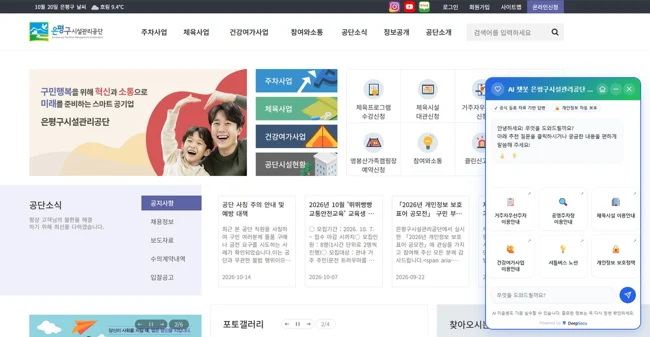
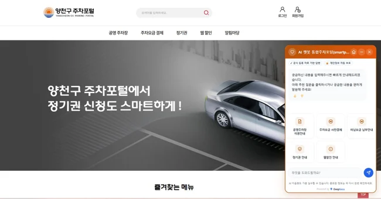
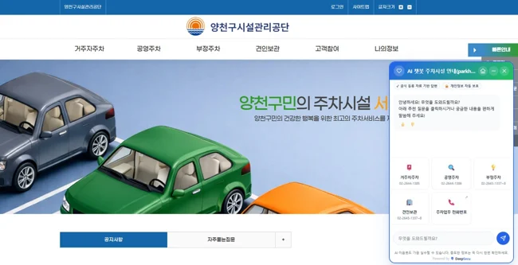
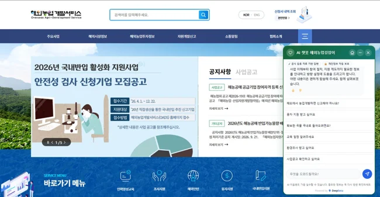
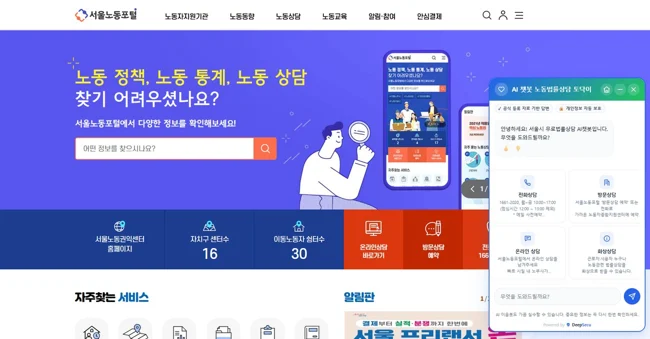
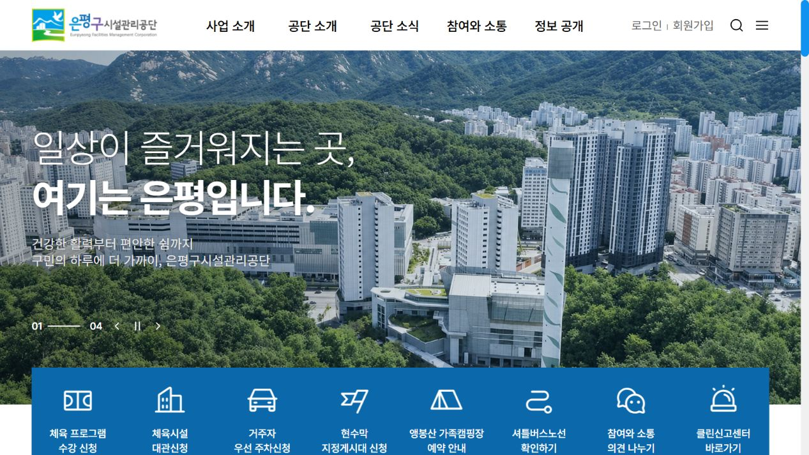
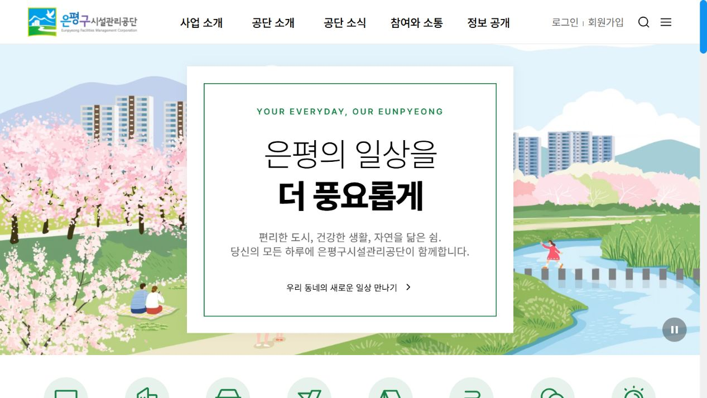
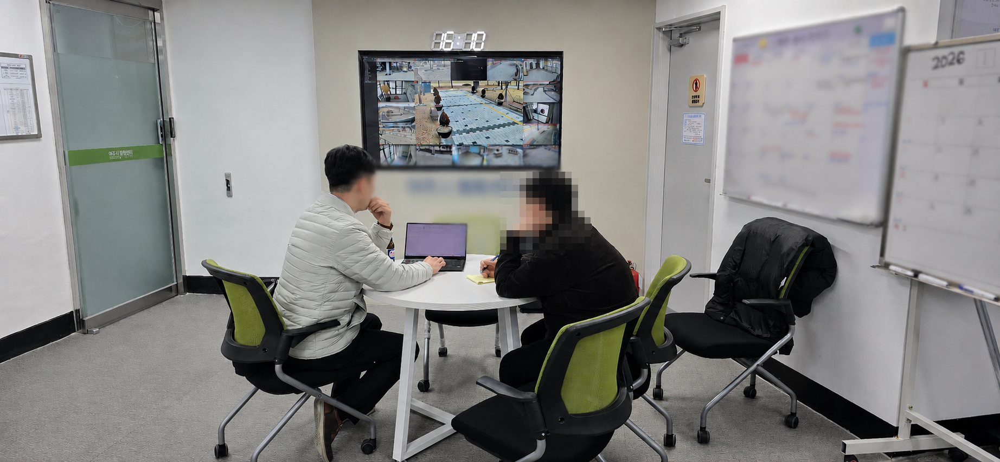
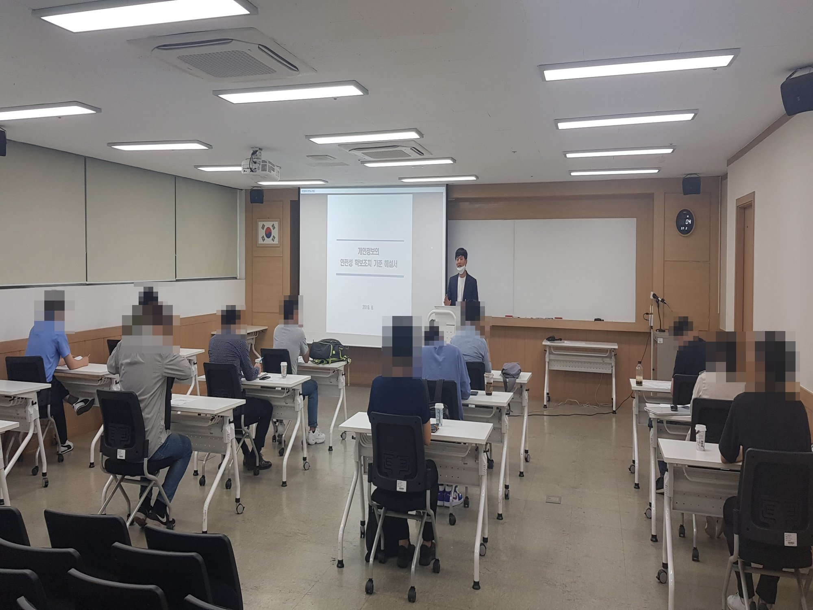

Home > Company
회사소개
개인정보보호·정보보안 컨설팅을 중심으로 AI 챗봇(이음봇)과 홈페이지 기능개선·유지관리를 지원합니다.
About DeepSecu
평가 준비부터 딥시큐는 개인정보보호를 중심으로 기관의 보안과 정보화 과제를 지원하는 컨설팅 기업입니다. 평가나 점검에 쓰는 자료를 실제 업무 절차와 대조하고, 담당자가 사업 이후에도 활용할 수 있는 형태로 결과를 정리합니다.
딥시큐 결과보고서 구성 예시
컨설팅 실무 협의 장면 딥시큐와 일하면 무엇을 받나요?
🔒 개인정보보호 평가 항목별 확인 결과, 증빙자료 목록, 처리방침·내부관리계획 개선안을 제공합니다.
🛡️ 정보보안 진단 관리체계와 기술 점검 결과를 정리하고 우선 조치할 과제와 후속 확인 방법을 제시합니다.
🗂️ 정보화 사업 지원 요구사항, 개선 대안, 구축 이슈 등을 발주·운영 담당자가 검토할 수 있도록 문서화합니다.
함께 일하는 방식 착수 협의 대상 업무, 자료, 참여 부서와 일정 확인
중간 결과 공유 확인한 사실과 추가 검토 사항 논의
결과 인계 산출물과 후속 조치 항목 전달
Home > AI 챗봇(이음봇)
AI 챗봇(이음봇) 딥시큐가 개발·운영하는 문서 기반 AI 챗봇입니다.
공공기관 홈페이지용 문서 기반 AI 챗봇
같은 문의는 이음봇이 먼저 답하고,
신청서류, 주차 요금, 시설 이용시간처럼 홈페이지에 이미 올라온 안내를 챗봇에서 찾을 수 있습니다. 이용자는 근무시간 이후에도 질문할 수 있고, 담당자는 반복 질문과 보완할 안내자료를 확인할 수 있습니다.
요금제 보기 4개 기관 · 5개 사이트 적용 2026년 10월 기준
이음봇 운영 화면
공공기관이 이음봇으로 안내를 운영하는 방법
📄 안내 근거를 이용자에게 표시기관이 등록한 자료나 지정한 데이터에서 답을 찾고 참고 문서나 페이지를 함께 보여줍니다.
📞 근거가 부족하면 담당 부서로 연결지정 FAQ가 있으면 우선 적용하고, 등록 자료에 근거가 부족하면 담당 부서를 안내합니다.
🔒 개인정보 입력에 대비주민등록번호나 연락처 등 탐지 대상 정보는 가려서 처리하고, 차단 이력을 관리 화면에서 확인할 수 있습니다.
📊 답하지 못한 질문까지 운영에 활용대화 이력, 자주 묻는 주제와 답하지 못한 질문을 보고 안내자료나 FAQ를 보완할 수 있습니다.
상위 플랜에서는 선택지와 추가 질문을 조합해 신청 유형별로 안내하는 흐름도 만들 수 있습니다.
근거가 있는 답변과 담당 부서 안내
“공영주차장 할인 신청은 어디서 하나요?” 등록 자료에서 신청 경로를 찾아 안내하고, 이용자가 확인할 수 있도록 원본 페이지를 표시합니다.
출처 표시 예시 · 홈페이지의 주차 할인 안내 “다음 달에 할인 기준이 바뀌나요?” 등록 자료에서 변경 공지를 찾지 못했다면 답변 생성을 멈추고 담당 부서로 안내합니다.
답하지 못한 질문은 운영자가 자료 보강에 활용 답변 예시입니다. 실제 답변은 기관이 등록한 자료를 바탕으로 안내합니다.
어떤 문의에 활용되고 있나요?

은평구시설관리공단 대표 홈페이지 거주자우선주차, 공영주차장, 체육시설과 건강여가사업 이용 안내

양천구시설관리공단 통합주차포털 사전 결제, 미납요금 납부, 정기권과 할인 안내

양천구시설관리공단 주차시설 안내 주차시설 이용과 업무별 연락처 안내

해외농업자원개발협회 해외농업길잡이 해외 농업개발 신고, 융자 지원, 교육 일정과 사업 공고 안내

서울노동권익센터 노동법률상담 토닥이 전화·방문·온라인·화상 상담 이용 방법 안내
자료 등록부터 누리집 연동까지 1 자료 등록 기관이 사용할 안내 문서와 페이지 지정
안내자료·FAQ
2 답변 검토 자주 받는 질문을 미리 테스트하고 정해 둘 답변 확인
테스트 답변
3 누리집 연동 운영 환경에 맞춰 위젯 설치와 보안 정책 확인
챗봇 위젯
4 운영 개선 대화 기록과 답하지 못한 질문을 확인해 자료 보완
운영 통계·보완 목록
기관에 맞는 도입 방식과 요금
기존 홈페이지에 구독형으로 간편하게 연동할 수 있습니다. 기관 환경에 맞춘 구축형은 범위를 협의해 견적을 안내합니다.
월 요금 · 부가세 별도
Basic 소규모 기관·기업
500,000원 / 월
기본 AI 챗봇 및 홈페이지 자료 등록 기본 관리자 기능 이메일 기술지원 Standard 중소규모 기관·기업
800,000원 / 월
홈페이지 자료 자동 반영 관리자 통계 및 월간 성능 최적화 원격 기술지원 Premium 대규모 기관·기업
1,000,000원 / 월
실시간 데이터 반영 관리자 통계 및 우선 기술지원 전담 매니저 배정 Enterprise 맞춤 구축·대규모 도입
별도 견적
전용 기능 개발 및 API 연동 내부 시스템 또는 전용 AI 모델 연계 맞춤형 기술지원 구독형에는 홈페이지 위젯 연동, 관리자 포털, 업데이트, 플랜별 기술지원과 개인정보 마스킹 기능이 포함됩니다. 적용 사이트 수, 이용량, 초기 설정비와 세부 지원 범위는 도입 상담에서 확인할 수 있습니다.
자주 받는 질문으로 먼저 확인해 보세요 공식 체험에서 질문해 보거나, 기관의 안내자료와 대표 질문을 바탕으로 도입 범위를 상담할 수 있습니다.
문서 미리보기 솔루션 VIEWSTORY 공급
VIEWSTORY는 유비스토리의 문서 미리보기 솔루션입니다. 딥시큐는 제품 공급과 누리집 연동 범위를 안내합니다.
제품 공급 범위
협력사 VIEWSTORY 제품의 라이선스 공급 및 구매 절차를 안내합니다.
제품 기능 안내
문서 미리보기 기능과 선택 사양은 제조사의 최신 제품자료를 기준으로 확인합니다.
도입 및 계약 협의
라이선스 유형, 납품 및 기술지원 범위는 계약 전 확인하여 안내합니다.
악성메일 모의훈련 운영 서비스
딥시큐가 파수의 Mind-SAT을 활용해 모의훈련을 운영하고, 결과 분석과 후속 개선을 지원합니다.
훈련 환경 사전 협의
기관 메일 환경과 훈련 대상, 발송 정책 및 필요한 사전 설정을 협의합니다.
훈련 계획 및 운영
훈련 목적과 일정에 맞춰 시나리오 및 발송 계획을 수립하고 훈련을 수행합니다.
결과 분석 및 개선 자문
열람·반응 현황 등 훈련 결과를 분석하고 후속 교육 및 개선 방향을 제안합니다.
Home > 홈페이지 개선·유지관리
홈페이지 기능개선·유지관리 딥시큐가 홈페이지 개선 요청을 직접 받고, 작업 범위 협의부터 반영 결과 확인과 유지관리까지 담당합니다.
홈페이지 운영 지원
운영하면서 발견한 불편을 개선합니다 게시판, 신청·안내 화면, 첨부 문서 열람 등 운영 중인 홈페이지에서 개선이 필요한 부분을 확인합니다. 사이트 구조와 운영 여건을 보고 작업 범위와 점검 기준을 협의합니다.
딥시큐에 직접 요청하세요
📋 요청 접수와 작업 협의 딥시큐가 담당 창구가 되어 개선할 기능, 작업 일정, 확인 기준을 고객과 협의합니다.
⚙️ 작업 관리와 반영 확인 기능 수정과 유지관리 작업을 관리하고, 반영 결과와 후속 사항을 딥시큐가 안내합니다.
개선 과제에서 운영 확인까지
1 요청사항 확인 불편이 발생하는 화면과 운영 환경 파악
개선 요청 목록
2 범위·일정 협의 우선순위, 작업 범위, 확인 기준 합의
작업 범위 및 일정
3 기능 반영 협의한 기능을 수정하고 변경 내역을 정리
반영 내역
4 운영 확인 반영된 기능과 추가 개선 사항 확인
점검 결과 및 후속 항목
홈페이지 기능개선 · 작업 방식
같은 홈페이지를 세 가지 방향으로 설계합니다
같은 홈페이지라도 구민이 무엇을 먼저 찾는지에 따라 첫 화면의 구성이 달라집니다. 아래는 공공시설 홈페이지의 첫 화면을 구성하는 예시입니다. 딥시큐는 바로가기, 서비스 탐색, 지역 이미지에 각각 무게를 둔 화면을 나란히 놓고, 기관 담당자와 어떤 구성이 더 알맞은지 논의합니다.
첫 화면 구성 예시
업무 바로가기형 자주 쓰는 업무를 첫 화면에 수강 신청, 시설 대관, 주차 신청처럼 방문 목적이 뚜렷한 이용자가 원하는 메뉴로 바로 이동할 수 있게 구성했습니다.
이미지 크게 보기 
생활서비스 탐색형 분야별로 둘러보기 쉽게 체육·주차·여가를 주제별로 묶어, 이용할 시설이나 프로그램을 아직 정하지 않은 방문자도 찾기 쉽게 구성했습니다.
이미지 크게 보기 
지역 이야기형 지역의 이미지를 살린 첫인상 지역 풍경을 담은 일러스트로 공단의 첫인상을 만들고, 생활 서비스 안내로 자연스럽게 이어지도록 구성했습니다.
이미지 크게 보기 기관 담당자와 함께 비교하는 기준 주요 신청 메뉴를 얼마나 쉽게 찾는지, 모바일에서도 안내를 읽기 편한지, 기관의 이미지가 잘 전달되는지를 함께 살펴봅니다.
기술 작업은 범위에 따라 전문 협력사가 참여할 수 있으며, 요청 접수와 작업 관리는 딥시큐가 담당합니다.
Home > 전문 컨설팅
전문 컨설팅
정보보안·개인정보보호를 중심으로 기관의 관리체계 진단과 개선, 정보화 사업기획 및 구축 자문을 제공합니다.
개인정보보호 컨설팅
정보보안 진단·컨설팅
정보화 기획·구축 PMO
정보화 진단·중장기 전략
정보시스템 운영·유지관리
보안교육·모의훈련
정보시스템 운영·유지관리 시스템 운영에 필요한 점검 범위와 담당자별 역할을 정리하고, 장애나 변경에 대응하는 절차와 기록 관리를 지원합니다.
운영관리 범위와 산출물 1 운영 현황 파악 시스템 목록과 업무 분장 확인
운영 자산 목록
2 정기점검 기준 정리 점검 항목과 기록 주기 협의
운영 점검표
3 장애·변경 대응 보안·서비스 영향을 고려한 처리 절차 정비
장애·변경 이력 양식
4 인수인계 후속 담당자가 참고할 운영 정보 문서화
운영 절차서
업무 방식 · 정보시스템 운영·유지관리
운영 기록을 점검과 인수인계에 활용
이런 상황에 활용 정기점검과 장애 대응을 이어서 관리하려면 작업 상태와 후속 조치가 기록으로 남아야 합니다.
딥시큐가 맡는 일 관리 대상과 점검 기준을 정하고, 장애·변경의 접수부터 결과 확인까지 기록할 항목을 협의합니다.
산출물 예시 업무 여건에 맞춘 운영 점검표, 장애·변경 이력 양식, 인수인계 자료 운영 점검표 예시 항목 확인 사항 기록 항목 정기점검 관리 대상과 점검 주기 점검일·담당자·결과 장애 대응 영향 범위와 조치 상태 접수·복구·후속 조치 인수인계 미해결 건과 운영 문서 담당자·자료 위치
일반적인 운영·유지관리 업무
🗂️ 운영 자산과 정기점검 서버, 업무시스템, 네트워크 등 관리 대상과 담당자를 정리합니다. 시스템별 점검 항목과 주기를 정하고, 점검 결과와 후속 조치를 기록합니다.
🔔 장애 접수와 대응 장애 접수, 영향 범위 확인, 담당자 전달, 조치 결과 공유의 흐름을 정리합니다. 복구 후 처리 이력과 재발 방지 과제를 남깁니다.
💾 변경·백업 관리 작업 전 승인과 서비스 영향 검토, 작업 후 확인 절차를 마련합니다. 백업 대상·주기와 복구 확인 방법도 운영 여건에 맞춰 검토합니다.
📋 운영 기록과 인수인계 점검 및 변경 기록, 미해결 이슈, 담당자와 연락 체계를 정리해 후속 운영자가 업무를 이어받을 수 있도록 지원합니다.
대상 시스템, 지원 범위, 점검 주기와 장애 대응 방식은 기관의 운영 환경과 과업 조건에 맞춰 협의합니다.
운영·유지관리 문의
기획부터 구축 검수까지 1 요구사항 정리 대상 업무와 시스템 범위 확인
요구사항 목록
2 발주 지원 제안요청서와 사업비 산출 검토
발주 문서 검토의견
3 구축 점검 일정·품질 이슈와 산출물 검토
이슈 관리표
4 검수 지원 합의한 기준에 따른 결과 확인
검수 체크리스트
주요 수행 사례 · 문화예술 분야 국립기관 · 누리집 통합 개편 지원
현행 화면에서 발주 요구사항으로
기관의 과제 누리집 통합 개편을 위해 기존 화면과 기능을 파악하고 부서별 요청을 발주 검토에 쓸 수 있도록 모을 필요가 있었습니다.
딥시큐가 맡는 일 누리집의 현행 구성과 기능을 분석하고, 운영 부서가 제시한 내용을 기능 단위 요구사항으로 정리하는 작업을 지원했습니다.
주요 산출물 누리집 현황 분석과 기능 요구사항 정리 자료 요구사항 목록 예시 요구 영역 정리할 내용 검수 관점 콘텐츠 운영 담당자별 게시 권한과 검토 절차 역할별 화면 동작 확인 이용자 접근 주요 메뉴와 화면 이동 기준 대표 이용 시나리오 확인 운영 인계 관리 문서와 인수인계 범위 운영 담당자 확인
구축사업에서 확인하는 항목
정보화 사업 관련 협의 장면
정보화 사업기획 및 구축사업 관리 자문
발주기관의 업무 요구사항과 정보시스템 현황을 바탕으로 사업 범위를 구체화하고, 제안요청서·사업비 산출·과업심의 등 발주 준비를 지원합니다. 구축 단계에서는 일정·산출물·품질·보안 사항을 검토하여 발주기관의 의사결정을 돕습니다.
🔍 정보화 기획 및 PMO 핵심 자문 범위
요구사항 및 RFP 설계 검토
현업 부서의 요구사항을 구체적 기능 명세로 정의하고, 모호하거나 공급사에 편향된 독소 조항을 배제한 제안요청서(RFP) 및 과업지시서 수립 지원
SW 대가산정 정밀 검증
소프트웨어사업 대가산정 가이드라인에 따른 기능점수(FP) 산정 및 M/M 투입공수 교차 검토로 예산 낭비 차단 및 사업비 타당성 입증
구축단계 공정·품질·보안 관리
과업대비표 기반 요구사항 추적성 매트릭스(RTM) 운영, 마일스톤별 핵심 산출물 표준 준수 검토, 시큐어코딩 및 웹 취약점 조치 확인 총괄
검수 및 운영 인수인계 지원
단위·통합 테스트 시나리오 적정성 검증, 운영자/사용자 매뉴얼 검토, 준공검사 조서 작성 및 유지관리 이관 프로토콜 확립 지원
정보화 진단·중장기 전략으로 돌아가기
공공데이터 현황 파악에서 개방 검토까지 1 보유 데이터 파악 데이터 목록과 담당 부서, 관리 기준을 확인합니다.
데이터 현황 목록
2 품질 확인 데이터 표준과 형식, 누락 여부를 확인합니다.
품질 점검표
3 개방 범위 검토 공개 제한 정보와 제공 가능한 범위를 검토합니다.
개방 검토 의견
4 개선 방향 정리 데이터 정비 우선순위와 관리 절차를 제시합니다.
데이터 정비·개방 계획
업무 방식 · 공공데이터 품질·개방 자문
데이터를 개방하기 전에 확인할 사항을 정리
이런 상황에 활용 기관이 보유한 데이터의 정비 우선순위와 개방 검토 범위를 정해야 할 때 활용합니다.
딥시큐가 맡는 일 데이터 목록, 표준·형식, 공개 제한 항목을 확인하고 담당 부서와 정비 방향을 협의합니다.
산출물 예시 데이터 현황표, 품질 검토 의견, 개방·정비 계획 예시 데이터 검토표 예시 검토 영역 확인할 내용 정리할 사항 목록 보유 데이터와 담당 부서 현황과 갱신 주기 품질 형식·표준·누락 여부 정비 우선순위 개방 공개 가능 범위와 제한 항목 개방 검토 의견
공공데이터 검토 항목
공공데이터 관련 자료 검토 장면
신뢰 기반의 공공데이터 개방 전략 및 품질 고도화
공공기관이 보유한 원천 데이터의 안전하고 효율적인 민간 개방 표준 체계를 수립합니다. 데이터 개방에 따르는 저작권 컴플라이언스 요소를 정밀 분석하고, 공유 과정에서의 부작용을 통제할 수 있는 최적의 거버넌스를 설계합니다.
📊 주요 데이터 거버넌스 범위
품질수준 진단 가이드
행정안전부 공공데이터 품질 진단에 부합하는 정형/비정형 오염 차단 체계 정립 및 오류율 개선
데이터 가명 조치
민감 정보 유출 방지를 위한 가명·비식별화 처리 및 저작권 컴플라이언스 리스크 분석
오픈 API 규격 설계
타 기관 및 민간 서비스와의 유기적 데이터 연계를 위한 표준 인터페이스 검토 및 구축
관련 자문 · 공공데이터 품질 및 개방
현황 분석에서 중장기 이행계획까지 1 현황 파악 업무시스템과 인프라, 운영 구조를 확인합니다.
현황 분석서
2 개선과제 도출 업무 영향과 운영상 제약을 바탕으로 과제를 정리합니다.
개선과제 목록
3 대안 비교 도입 범위와 운영 부담, 추진 여건을 비교합니다.
개선 대안 비교표
4 이행계획 수립 우선순위와 선행 과제를 반영해 추진 순서를 정합니다.
중장기 이행 로드맵
주요 수행 사례 · 산업 분야 협회 · 정보화·정보보호 중장기 개선방안
운영 현황을 분석해 투자와 개선 순서를 제시
기관의 과제 업무시스템과 운영 구조를 살펴보고 개선 대안과 단계별 추진 방향을 마련할 필요가 있었습니다.
딥시큐가 맡는 일 업무시스템과 정보보호 운영 현황을 분석하고, 과제별 추진 여건과 선행 조건을 고려해 이행 로드맵을 제시했습니다.
주요 산출물 현황 분석, 개선 대안, 단계별 이행 로드맵 단계별 로드맵 예시 단계 검토 초점 정리할 사항 기반 정비 운영 기준과 담당 체계 우선 조치 항목 개선 추진 대안과 도입 순서 선행 조건 및 추진 범위 운영 정착 이행 결과와 운영 부담 후속 점검 기준
중장기 전략의 비교 기준
정보화 현황 검토 회의
정보화 현황 진단 및 중장기 개선방안 수립
기관의 업무시스템, 전산 인프라, 유지관리 계약 및 정보화 운영체계를 검토합니다. 운영상 문제와 개선 필요사항을 정리하고, 예산·인력·사업 우선순위를 고려한 단계별 개선과제를 제시합니다.
⚙️ 정보화 종합 진단 및 개선 영역
전산 인프라 및 클라우드 실사
서버·스토리지·네트워크 장비 노후도 및 자원 이용률(Capacity) 정밀 분석, 공공 클라우드(민간/공공존) 전환 타당성 검토
업무시스템 아키텍처 진단
ERP, 전자결재, 대표 누리집 및 대민 서비스 채널의 연계 호환성, 단종(EOS) 리스크 및 재구축 우선순위 도출
유지관리 계약 및 SLA 적정성 검토
통합유지관리 용역의 과업 범위, 과다/과소 비용 구조, SLA 서비스 수준 협약 지표 및 불공정 독소조항 스크리닝
전산 조직 및 법정 거버넌스 수립
정보화 전담 인력 공석에 따른 운영 리스크 진단, 행정안전부·개보위 법정 의무 책임관(CISO·CPO·데이터제공관) 지정 매핑
진단 결과가 개선과제로 이어지는 과정 1 범위 합의 대상 시스템과 운영 환경 확인
점검 범위
2 진단 수행 관리체계와 합의된 기술 범위 점검
진단 결과
3 과제 정리 위험과 운영 영향을 고려해 순서 결정
개선 권고안
4 후속 확인 조치 상태 점검 방법 정리
후속 점검표
주요 수행 사례 · 문화관광 분야 공공기관 · 정보보안 관리체계 진단
정책과 운영 절차를 함께 점검해 개선과제로 정리
기관의 과제 기관의 정보보안 정책과 일상 운영에서 점검해야 할 사항을 정리해야 했습니다.
딥시큐가 맡는 일 사업수행계획의 점검 범위를 바탕으로 운영 현황을 검토하고, 정책 정비와 후속 점검에 필요한 과제를 도출했습니다.
주요 산출물 관리체계 진단 및 정책 개선 방향을 담은 정보보안 컨설팅 결과보고서 개선과제 관리표 예시 검토 영역 조치 예시 확인 방법 보안 정책 검토 주기와 담당 역할 명확화 개정본 및 검토 기록 운영 절차 업무별 점검 절차 문서화 절차서와 점검표 보안 교육 대상과 교육 내용 정리 교육 계획 및 결과 기록
정보보안 진단의 점검 범위

정보보안 관련 실무 협의
정보보안 관리체계 진단 및 기술적 보안 개선 자문
기관의 정보보호 관리체계와 정보시스템 운영 현황을 함께 점검합니다. 보안 규정·운영 절차의 이행 여부를 확인하고, 서버·네트워크·웹서비스 등의 취약요인을 분석하여 우선순위에 따른 개선과제를 제시합니다.
정보보안 관리체계 및 기술 진단 주요 범위
정보보호 관리체계 진단
정보보호 정책·지침, 담당자 역할, 접근권한 및 계정관리, 사고 대응 절차 등 관리적 보호조치의 운영 현황 점검
정보시스템 취약점 점검
서버·네트워크·DB·웹서비스 등 점검 대상과 범위를 협의하고 주요 설정 오류 및 취약요인을 확인
보안 개선 및 이행 자문
진단 결과를 위험도와 개선 시급성에 따라 분류하고 조치 방향, 담당부서별 이행과제 및 후속 점검 방안 제시
개인정보보호 컨설팅 진행 절차 1 현황 확인 개인정보 처리업무와 보유 문서를 파악합니다.
📄 처리 현황·자료 목록
2 평가 항목 대조 평가 항목별 증빙자료와 보완이 필요한 부분을 확인합니다.
📄 증빙자료 목록·보완 항목
3 개선과제 도출 처리방침과 내부관리계획 등 정비 대상과 우선순위를 정합니다.
📄 문서 개선안·이행계획
4 결과 공유 진단 결과와 기관이 이어서 확인할 사항을 정리합니다.
📄 진단보고서·후속 점검표
산출물은 기관의 과업 범위에 따라 달라질 수 있습니다.
주요 수행 사례 · 자치구 시설관리기관 · 개인정보 보호수준 평가 대응
평가 항목을 증빙과 연결해 보완할 일 찾기
기관의 과제 평가에 필요한 자료가 여러 부서에 흩어져 있어, 어떤 항목을 어느 문서로 설명할 수 있는지 확인하는 일이 필요했습니다.
딥시큐가 맡는 일 평가 항목과 제출 자료를 대조하고, 추가 확인이나 보완이 필요한 사항을 정리했습니다.
주요 산출물 평가 항목별 증빙 목록과 후속 보완 사항 증빙 검토표 예시 검토 항목 확인할 자료 후속 확인 개인정보 처리방침 공개 중인 처리방침 게시 내용과 실제 업무 대조 위탁관리 위탁 현황과 안내 문서 담당 부서와 갱신 주기 확인 교육 이행 교육계획과 참여 기록 증빙 보관 위치 확인
개인정보보호 검토 자료 예시
개인정보보호 관련 실무 협의
개인정보보호 수준 진단 및 관리체계 정비
기관의 개인정보 처리 현황과 관련 법령·지침에 따른 보호조치 이행 여부를 진단합니다. 개인정보파일, 처리방침, 내부관리계획, 위탁관리 및 유출 대응 절차를 검토하고 기관 여건에 맞는 개선방안과 문서 정비를 지원합니다.
개인정보보호 진단 및 관리체계 정비 범위
개인정보 보호수준 진단
기관에 적용되는 평가·점검 기준을 검토하고 개인정보 처리 현황과 증빙자료를 확인하여 개선 필요사항 도출
개인정보 처리 현황 및 보호조치 점검
개인정보파일 관리, 수집·이용·제공·파기 절차, 접근권한, 위탁관리 및 안전성 확보조치의 운영 현황 확인
내부관리계획 및 처리방침 정비
내부관리계획, 개인정보 처리방침, 유출 대응절차 및 관련 서식의 적정성을 검토하고 개정안 마련 지원
보안교육·모의훈련에서 후속 개선까지 1 대상과 목표 확인 직무와 업무 환경을 살펴 교육·훈련 목표를 정합니다.
교육·훈련 범위
2 교육·훈련 설계 기관과 협의해 교육 내용과 승인된 훈련 범위를 정리합니다.
교육 자료·훈련 운영안
3 교육·훈련 운영 합의한 일정에 맞춰 프로그램을 운영합니다.
수행 기록
4 결과 공유 대응 과정에서 나온 개선과제를 후속 교육에 반영합니다.
결과보고서·후속 교육안
주요 수행 사례 · 공공시설 관리기관 · 임직원 이메일 보안 모의훈련
임직원 이메일 보안 모의훈련 운영
기관의 과제 임직원이 의심 메일을 발견했을 때 확인과 신고를 어떻게 하는지 점검할 필요가 있었습니다.
딥시큐가 맡는 일 기관과 훈련 범위를 협의하고 이메일 보안 모의훈련을 운영했습니다.
결과 활용 예시 훈련 결과를 바탕으로 신고 절차를 점검하고 후속 교육 항목을 정리할 수 있습니다. 훈련 결과 정리표 예시 구분 확인할 내용 후속 조치 예시 훈련 범위 대상과 사전 합의 사항 대상별 브리핑 보완 대응 과정 신고 경로와 전달 절차 신고 경로 재안내 후속 교육 추가 안내할 업무 상황 직무별 교육 자료 반영
교육·훈련에서 살펴보는 항목

보안 교육 진행 장면
사회공학적 위협 대응을 위한 맞춤형 역량 강화 세미나
형식적인 주입식 법정의무교육을 탈피하여, 공공·유관기관 실무 임직원들의 실제 침해 대응력을 향상시키는 실전 프로그램을 운영합니다. 최신 랜섬웨어 및 스피어 피싱 공격 패턴을 내재화하는 실무형 세미나입니다.
🎓 역량 강화 프로그램 라인업
악성메일 모의훈련 자문
정부 감사 및 공공수준평가 지침 규격에 맞춘 모의 메일 시나리오 연계 설계 및 결과 추적 관리 대행
공공 정보화 실무 교육
최신 개인정보보호법 개정안의 실무 적용 해설서 특별 제공 및 정식 직무 교육 수료증 발급
위탁사 동반 세미나
외부 외주 용역사 및 유지관리 인력이 현장 실무 일선에서 놓치기 쉬운 필수 보안 의무 특별 전수
Home > Performance
수행 실적
정보보안·개인정보보호 컨설팅, 정보화 진단 및 구축 자문 등 주요 수행 분야와 프로젝트 경험을 소개합니다.
2026 · 산업 분야 협회
정보화·정보보호 중장기 개선방안 수립
🎯 기관의 과제시스템과 운영 방식의 개선 필요성을 파악하고, 어떤 일을 먼저 추진할지 정하는 과제였습니다.
🔎 딥시큐가 맡은 일업무시스템과 운영 구조를 분석하고, 개선 대안을 비교해 단계별 추진 과제를 정리했습니다.
📄 주요 산출물운영 현황과 개선 과제를 정리하고, 단계별 추진 순서를 담은 이행 로드맵을 제시했습니다.
전체
정보화 기획 · PMO
정보화 진단 · 개선
정보보안 · 개인정보보호
2026
[국립기관] 국립문화예술단체
홈페이지 통합 개편을 위한 현황 분석과 기능 요구사항 정리 지원
정보화 기획 · PMO 2025
[대형공공] 서울시 핵심 대민 서비스 채널
공공 누리집 문서 미리보기 도입을 위한 구매 및 기술 검토 자문
정보화 기획 · PMO 2026
[정부유관기관] 정부 지정 통계진흥단체
보안·개인정보보호 관리체계 점검 및 보호수준 평가 대응 자문
정보보안 · 개인정보 2026
[공공기관] 서울 다수 자치구 시설관리공단
전산실 운영 환경 점검 및 정보시스템 장비 사양 검토
정보화 진단 · 중장기 개선 2026
[공공기관] 지자체 출연 자치구 시설관리공단
행정안전부 주관 개인정보 보호수준 평가 대응 및 임직원 악성메일 대응력 진단 수행
정보보안 · 개인정보
Home > Contact Us
문의하기
검토 중인 업무나 도입 일정이 궁금하시면 전화 또는 이메일로 문의해 주세요.